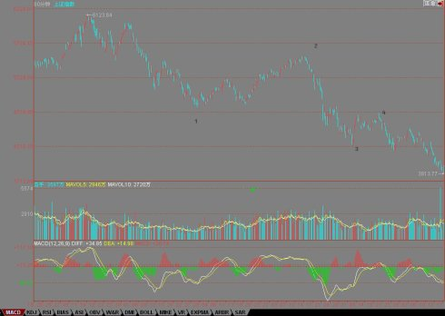

画饼救不了市场信心，同样拉中石油粉饰也不行，这顺理成章地导致多杀多的蔓延，不过，这反而导致短期底部的加速来临。
今天，如前期所说，那些对会议还有冀望的人终于也杀出来了，当然，现在还缺一些死多头去献出胳膊和腿，没有这些胳膊和腿，大盘的反弹是不会有力度的。
现在，就纯粹探讨技术上的问题，不说那些已经反复说过的东西。看看下面6124点下来的60分钟图，大的走势就一目了然。这次下来，目前只走了4个线段，连一个1分钟的中枢都没形成，注意，这是60分钟图上的1分钟中枢。
显然，一个标准的跌法，就是这第5线段中，有1笔对3进行反抽，形成一个类的第三类卖点，然后再破底，一旦当下满足区间套，那么真正的底部就可以精确定位。
不过，现在这对3的反抽笔还没有出现。因此，下面的反弹的性质，就是对3的反抽，如果形成类第三类卖点，那么是最好的；如果又上去了，那么证明3、4这个类中枢的震荡依旧，后面还要折腾。
所以，我们说的短线反弹在技术上是超级明确的。各位看，4的位置对应的MACD刚好在0轴，也就是被这压住上不去，然后再次破位，这是很标准的走势。

一般来说，看粗略的大趋势，可以用大图，例如，中石油，看日线图，48下来连一个线段都没走完。现在，很有机会走这线段的第4笔。
所以，对这个反弹，我们就有了一个很明确的把握了，具体的，可以针对具体个股去操作。不过这反弹点的更具体的定位，必须结合小图来继续寻找，大图只是给一个大概的轮廓。
明天的新闻发布会很可能是引起震荡的一个时间，如果其间没有什么值得关注的东西，震荡后继续会有新一批人杀出，等这批人也杀出来了，这盘就有点意思了。
现在，市场需要的是更多的断胳膊断腿，即使基本面不会有任何东西，也可以技术地折腾一把，但要技术地折腾，那就还需要更多的断胳膊断腿。
再说得明确点，如果基本面没有干货，那么反弹都只能是技术性的，这需要更充分的杀跌才有反弹的空间；所以，现在的市场选择前提很明确，就是有干货还是没干货。
先下，再见。